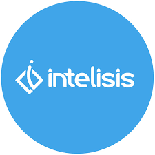
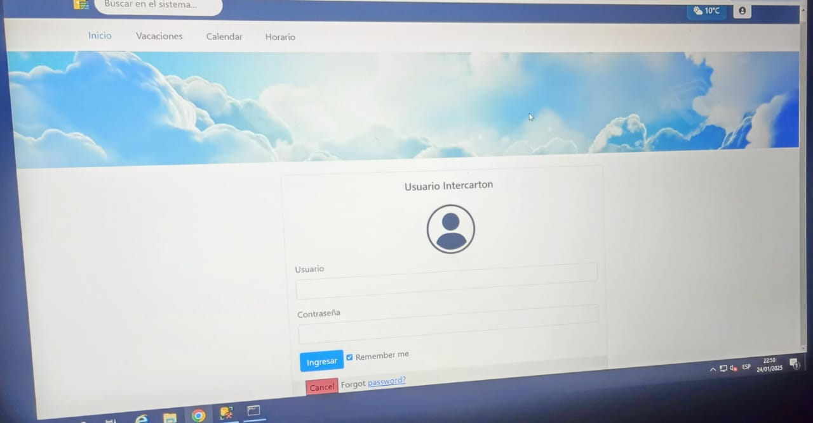

.png)
DRAKE.. | Experiencia Laboral
Ingeniero en Sistemas Intercarton.
1. Introducción
Como Ingeniero en sistemas computacionales se me ha dado la oportunidad de estar en una empresa como Auxiliar de Sistemas en donde desarrolle mis habilidades gestionar y manejar servidores y equipos de computo de la empresa así como gestión de ERP (intelisis) donde realice monitoreo de facturas, soluciones de departamentos en donde debíamos de realizar pruebas en nuestros módulos secundarios para pasar después a producción. A continuación se muestran varias de las actividades que he realizado.

Seguridad Informática con Sophos Antivirus Cuento con experiencia en la implementación y administración de Sophos Antivirus, asegurando la protección integral de sistemas contra malware, ransomware y otras amenazas cibernéticas, optimizando políticas de seguridad y gestionando endpoints para garantizar la integridad de los sistemas de la empresa.
Administración de Antivirus SHOPOS

Escaneo después de parche de seguridad
Cada actualización de shopos se cambia de versión y posteriormente se escanea

Instalación de parche de seguridad
Debemos de configurar shopos a cada usuario de la empresa en donde debemos de administrar las cuentas.

Generar confianza a la hora de trabajar
Cada que se detecta una amenza se realiza un diagnostico de donde proviene cierto virus, o phising en caso de correos.
CCTV
Experiencia en Sistemas de Videovigilancia CCTV Cuento con experiencia en la instalación, configuración y mantenimiento de sistemas de videovigilancia CCTV, incluyendo cámaras analógicas y digitales. He trabajado con software de gestión de video como Hikvision iVMS, asegurando la correcta integración de los dispositivos con la infraestructura de red.

Administración de CCTV con IVMS-4200.
Asignación de grupo de camaras a seguridad de la empresa

Usuario a seguridad
Por politicas de la empresa solo deben tener acceso 3 personas de la empresa cada uno con ciertos grupos.

Menú de de IVMS-4200
En este menú tenemos varias opciones de configuación de las camaras.

Conectar con cuenta de la empresa
En la empresa se debe de configurar con la cuenta principal en donde se configuraron los grupos de trabajo.
SOPORTE TÉCNICO
Durante el tiempo de Intercarton aplique mis conocimientos que desarrolle durante mis prácticas en Vento Motrocyles U.S.A que me ayudaban con mi base solida a brindar soporte técnico a usuarios dentro de la empresa realice mantenimiento correctivo y preventivo de sistemas operativos Windows 10, 11, DELL, HP, Windows Server, Linux, remotamente y fisicamente utilizando herraminetas como ISL Online y Escritorio remoto. Configuración de software y Adminstración de correos entre otras actividades.

Atención a usuarios y a jefes de Departamentos mediante ISL Online.

Cambio de Bateria
Brinde soporte técnico a usuarios con equipos Laptops Dell en donde realize mantenimineto de baterias unidades de almacenamiento llevando un registro de cada usuario.

Ademas de usuarios portatiles brinde soporte técnico a usuarios de escritorio para temas de producción dentro de la empresa.
Formateo de usuarios de escritorio, instalación de imagenes Windows de la empresa control de versiones actualizadas, instalación de software de la empresa, configuración de antivirus, ERP, y permisos a Servidor de Datos etc.

Levantamiento de equipos de escritorio
En la empresa se debe de configurar con a todos los usuarios con SO reciente para manejo de antivirus
Manejo de ERP intelisis
Como auxiliar de sistemas en INTERCARTON se me asignaron tareas de administración de ERP a usuarios dentro de la empresa realizaba actividades como seguridad de usuarios asignaba cuentas permisos y desbloqueaba a usuarios bloqueados además de participar con jefes de areas como facturación y contabilidad para actualización de Información de clientes seguimiento de pedidos y consultas dentro de la base de datos para análisis de datos dentro de la empresa para campañas de marketing actualizaba procesos dentro del ERP configurados en Procedimientos almacenados dentro de la base de Datos

ERP administración de usuarios en INTERCARTON.

Seguimiento a Remisión
Realizaba monitoreo de remisiones para corroborar con jefes de departamentos en casos de insidencias.

actualización de datos en base de datos para reflejarse en facturas
Cambios e implementaciones dentro de ERP intelisis en entorno de pruebas con jefes de departamentos para despues pasarlo a producción.

Administración de usuarios y licencias en intelisis
Monitoreo de usuarios del sistema configuración de nuevos usuarios, administración de licencias y permisos a areas
Integración de Sistema laser para marca de su mercancia
Colabore a la integración de nuevo software de laser para mejorar la eficiencia y automatizar procesos en producción.

Configuración de Laser.

Configuración de logo de INTERCARTON
Colabore a la configuración de el logo de la empresa para realizar impresiones en su materia de carga.

Prueba de implementación del laser con el software
Se realizaron pruebas de esta herramineta con el software mediante conexión wi-fi y mediante cable

Enrega de resultados a encargado del area
Se monto la instalación correctamente y se entregaron los resultados deseados
TABLEROS ELÉCTRONICOS
Se colaboro con un equipo extranjero en donde se implemento un sistema de monitoreo de entrada y salida de producción. Para mejorar el flujo de trabajo y optimizar producción.

Implementación de tableros electrónicos a producción.

Conexión de Tableros eléctronicos a nodos de red
Configuración de tarjeta de internet sensores a tableros y a maquinaria de producción.

Conexión a nodos de Red mediante RJ45
Se colaboro con el equipo de trabajo fui encargado de la instalación y conexión de estos tableros.

Configuración de dirección IP
Configuración de cada uno de estos tres tableros eléctronicos a cada maquina de producción mediante nodos de red para asignación de IP y posteriormente se configuro para ser visitada por gerentes estándo conectados a la red privada.
Auxiliar de Sistemas
Me incorpore a INTERCARTON como analista de Datos SQL Server en puesto de Auxiliar de sistemas soy Ingeniero en Sistemas Computacionales con formación en Bases de datos relacionales.
Me apasiona el mundo de los datos por lo que me especialize para ser DBA de bases de datos relacionales entre a esta empresa por que contaba con los requisitos de lo que la empresa estaba buscando analista de bases de datos SQL.
Soy un profesional proactivo y orientado a resultados, con pasión por la tecnología y constante actualización en las últimas tendencias del sector.
Mi formación académica combinada con experiencia práctica me ha permitido desarrollar competencias sólidas en:
• Administración de Bases de Datos: Gestión avanzada de SQL Server MySQL y Oracle
• Administración de Sistemas: Experiencia en entornos Linux y Windows Server
• Seguridad Informática: Implementación de medidas de protección y análisis de vulnerabilidades
• Resolución de problemas: Capacidad analítica para identificar y solucionar incidencias técnicas

PROYECTO DESTACADO
Cree y Diseñe un software de Recursos Humanos en donde genere una base de datos en SQL Server e implemente a este software para dejarlos en producción configurando lo necesario dentro del servidor para tener mejor rendimiento cuidado y protección de datos sencibles, para este proyecto desarrolle este software en Python Utilizando Flask y otras herramientas.
Descripción general
Es una aplicación web desarrollada con Flask que optimiza la gestión de personal de la empresa INTERCARTON. Permite registrar, consultar y modificar Información del personal, como los datos personales, historial laboral, asistencias, y desempeño, además de gestión de vacaciones.
Tecnologías utilizadas
- Python como Lenguaje de programación principal.
- Flask para la creación del backend web.
- Jinja2 para las plantillas HTML.
- SQL Server como base de datos
- HTML/CSS y Bootstrap para el diseño del frontend.

Actividades más realizadas con frecuencia.
Consultas DML, DDL, T-SQL SQL Server
Como buscaban analista de Base de datos se me asignaban tareas de Reportes muy complejos sobre análisis de datos en SQL Server para posteriormente cargarlos archivos CSV en donde aplicaba limpieza de datos en excel para tener mejor eficiencia a la hora de hacer calulos y posteriormente entregar reportes a jefes Inmediatos de diferentes areas.
- Revisión y actualización de Procedimientos almacenados (Stored Procedure)
- Consultas de mas de 50,000 registros con manejo de Peformormance para mejorar la eficiencia y velocidad de respuesta del servidor
- Realizaba backups de la base de datos para hacer pruebas en modulos de ERP intelisis y agregar funcionalidades a facturas y posteriormente con jefe de facturación se autorizaba y se implementaba en producción.
- Restauración de bases de datos para confirmar cambios de actualización.
- Backups atomaticos para respaldo de Información en servidor de datos y en la nube.
Tecnologías Utilizadas

REDES
Otras actividades
Además de anánlisis de datos tambien realize tareas de conexión de red ponchado de cable RJ45, para conexión a nodos de red, administración de equipos conectados a diferentes redes, así como mantenimiento de impresoras
- onfiguración de nuevos equipos de computo a impresoras mediante TCP/IP.
- Configuración de telefonía mediante conexión a internet
- Alta disponibilidad de servidores en casos de perdida de conexión etc.
- Documentación de procesos y mantenimiento a páginas web de la empresa.
Configuración de impresoras

Por cada departamento se configuraba impresoras a equipos de trabajo.

Cambios de cableado de la instalación.